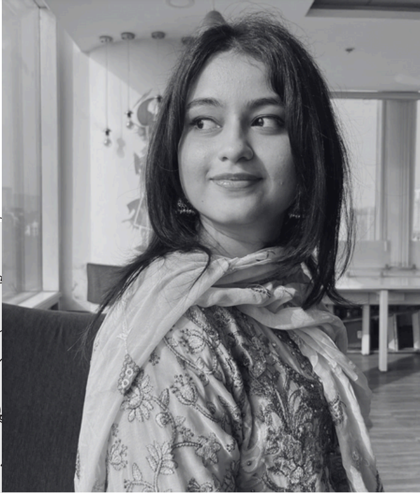

Summary
Dynamic young marketing professional with
experience in technical writing, social media
management, digital marketing & content
management. Demonstrated ability to
engage audiences across platforms and
drive brand visibility.
Education
KC COLLEGE
Bachelors of Multi Media & Mass
Communications | 9.25 CGPA
2021-2024
ORCHIDS INTERNATIONAL SCHOOL
12th Standard | 9.7 CGPA
2019-2021
Work Experience
Renaissance
Creative Copywriter | Aug 2024 - Present
- Working with 1/7 LinkedIn partners globally to create
social media and marketing content for Schneider
Electric.
Muses Consulting Studio (San Francisco, Remote)
Marketing Manager | Apr 2024 - Aug 2024
- Created and managed weekly newsletters, blogs,
organised speaker events and managed American
brands to give 60 hours+ to clients and close projects.
Humblebrag Advertising (Mumbai)
Account Manager | Apr 2023 - Mar 2024
- Crafted advertising campaigns, emailer copies, ad
scripts, catalogues, RPDs and SMPs, giving 500+ hours
to clients, managing and closing projects.
- Worked for big brands like NeoGrowth, Aditya Birla,
Wrogn, Motorola, Flipkart, IndusInd Bank, etc.
Society Interiors & Design + Stardust (Mumbai)
Content Manager | May 2022- April 2023 (Freelance)
- Orchestrated events featuring interviews with 50+
Bollywood celebrities.
- Collaborated with renowned architects, producing
project videos.
Skills
- Copywriting
- Account Management
- Event Management
- Campaign Building
- Social Media Marketing
- Client Communication
- Adobe Premiere Pro
- Event Co-ordination
- Brand Management
- Video Editing
- Web Analytics
- Paid Advertising
- Email Marketing
- Critical Analysis
- SEO Management
- Project Management
- Abobe Photoshop
- Microsoft Office
Achievements
- Produced 200+ Audio Visuals for various awards including
the 50th Annual Stardust Awards.
- Orchestrated campaign for Atomberg Smart Fans, selling
100+ fans on Amazon in 30 days.
- Overhauled Flipkart's Marq AC catalogue, attracting 400+
customers in 30 days.
- Improved Motorola TV's Envision X catalogue cards, garnering 1800+ customers on Flipkart within 30 days.
- Wrote & edited 300+ content pieces for leading brands.
Contact Number
Address